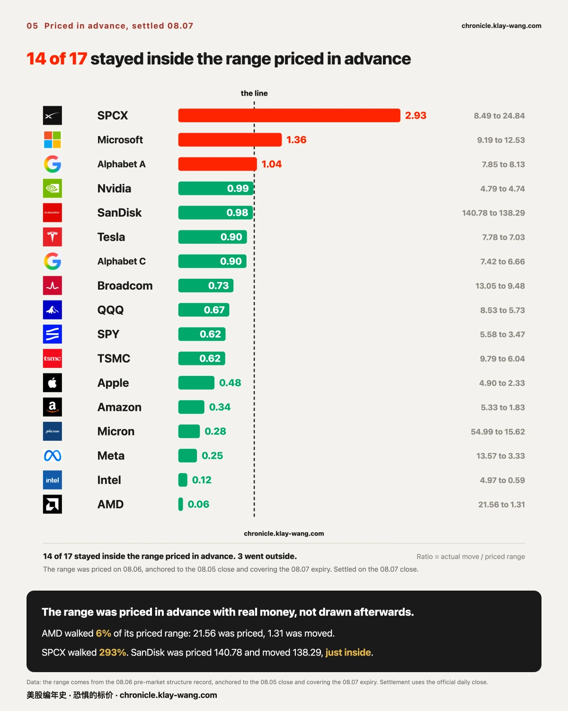
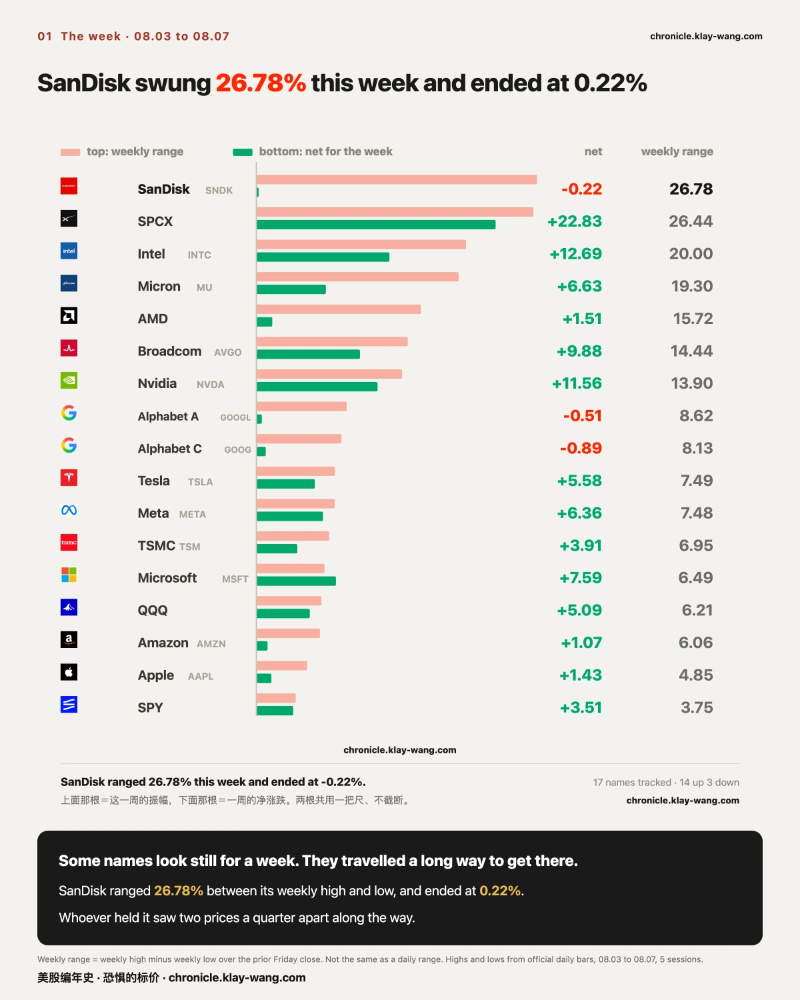
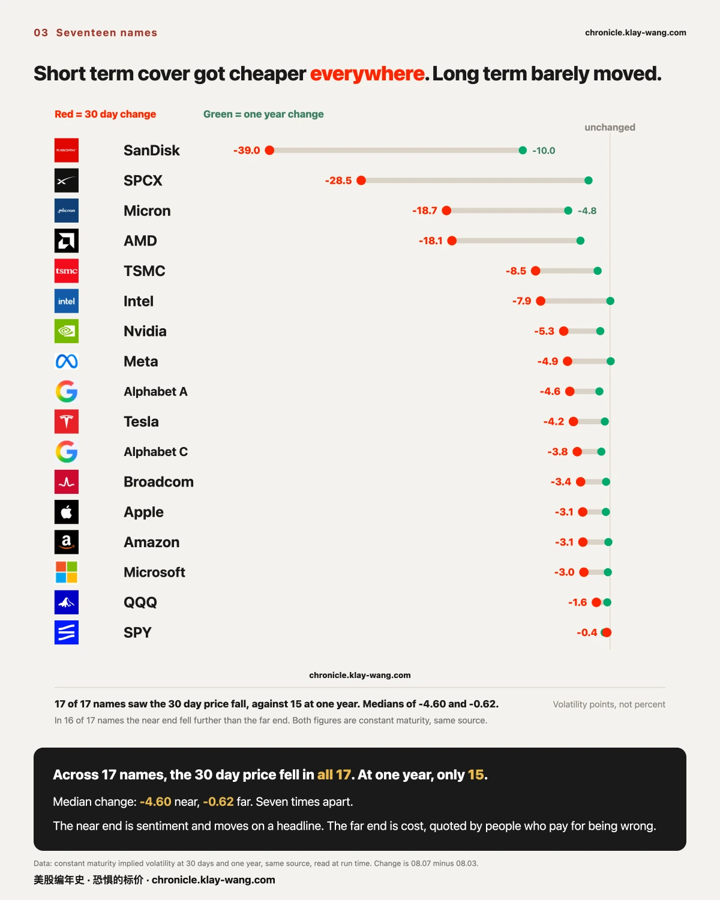
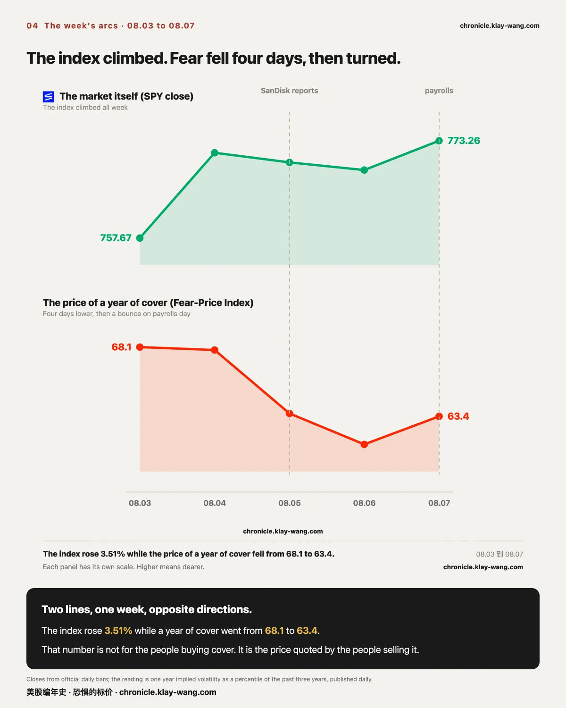
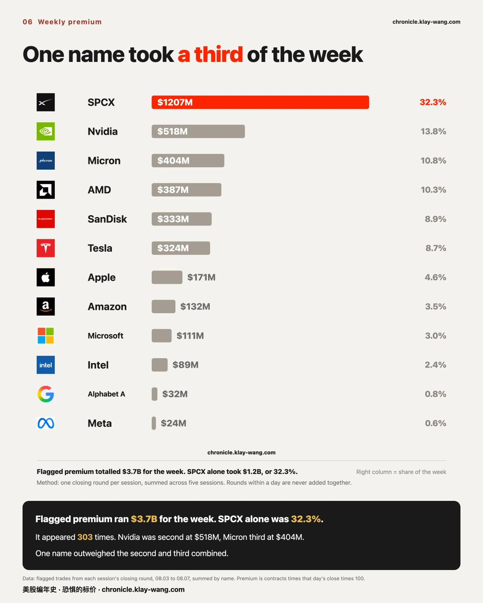

你的票，看似一周没动，其实走过了千山万水· 8.3-8.7 本周回顾
本周挂出去的判断，全部开了奖。 两条事前冻结的区间都兜住了闪迪的财报结果；SPCX 跌 13.61% 的那一天，仍然待在前一天就画好的区间里。这一周我们一次方向都没押，押的全是范围和去向。
三家周四收在同一种位置上：贴着行权价。 美光距 900 差 18.53、特斯拉距 320 差 0.47、英伟达距 220 差 1.01。周五收盘，特斯拉和英伟达穿了过去，美光反向走开。
一 · 本周回顾：挂出去的账，回来对
一句话：事前写下的区间，价值不在于它猜对了，在于它写下之后不能改。

闪迪的两条带都兜住了。 08.04 收盘时记录的区间是 1219.55 到 1588.79；08.05 收盘时市场把带子收窄并下移，记成 1209.723 到 1491.277。财报之后，08.06 收在 1258.58，两条带都装得下它，距 08.04 那条的下沿 39.03 美元，距 08.05 那条 48.86 美元。
值得记的是两条带的变化方向：随着股价从 1425 走到 1350 进入财报，市场把带子收窄了，也把整条带往下挪了。它不是一直开着同一个价在等，它每天都在改，而每次改都留了痕。
SPCX 那条更极端。 08.04 收盘给出的三日区间是 101.80 到 135.97。第二天它跌了 13.61%，日内最低 106.66、最高 117.50，全天都在那个区间里面。跌这件事本身，前一天就已经被算进价钱里了。
闪迪 1400 那一档的钱，两侧都没留下。 08.05 成交的合约里，看涨侧沉淀 7.1%、看跌侧 9.7%，两边都是九成以上当天开当天平。那批钱不是压着过夜的仓位，是当天来当天走的。
记分牌一句话：这一周押的全是范围和去向，一次方向都没押，五条全开了奖。
二 · 市场自己定的范围，也回来对了
一句话：不只我们挂的判断要回来对，市场自己用钱定的范围，同样可以对。

08.06 那天，市场给 17 只观察标的各定了一个到 08.07 到期前的波动范围。08.07 收盘开奖：
17 只里 14 只留在范围内，3 只走了出去（SPCX、微软、谷歌A）。
两头都很极端：AMD 只走了定价范围的 6%：给它定了 ±21.56，它动了 1.31；而 SPCX 走了 293%。闪迪最惊险，定 ±140.78 走了 138.29，擦着边没出去。
口径：范围是 08.06 盘前定的，上下沿锚 08.05 收盘、覆盖到 08.07 到期；开奖取 08.07 收盘。
三 · 你惦记的存储，看着一周没动，其实走过了千山万水
一句话：你惦记的那几只存储，一周下来涨跌多少，和这一周晃了多大，是两件事。

十七只观察标的，这一周 14 涨 3 跌。但把周振幅（周内最高减周内最低，除以上周五收盘）和一周净涨跌并排放，落差立刻出来：
| 票 | 这一周振幅 | 一周净涨跌 |
|---|---|---|
| 闪迪 | 26.78% | −0.22% |
| SPCX | 26.44% | +22.83% |
| 英特尔 | 20.00% | +12.69% |
| 美光 | 19.30% | +6.63% |
| AMD | 15.72% | +1.51% |
| 大盘 SPY | 3.75% | +3.51% |
前四名全是半导体与存储，而大盘只有 3.75%，晃得最狠的和最稳的差七倍。
闪迪是最极端的那个：周内最高到过 1446.62、最低跌到 1121.27，差 26.78%，而一周下来只动了 0.22%。逐日看是 +6.03、+10.84、−5.40、−6.81、−3.68，先冲上去，再一路还回来。
SPCX 是同样的幅度，完全不同的结果：振幅 26.44% 跟闪迪几乎一样，但它一周净涨 22.83%，晃出去了，没回来。
同样是两成六，一个是白折腾，一个是真涨。
反过来，英伟达周振幅 13.90% 而净涨 11.56%，它这一周走的每一步几乎都朝着同一个方向。
这也是为什么周线图会骗人。 它只画起点和终点，中间那 26.78 个百分点的往返，在图上一个像素都不占。
拿住闪迪的人，中间见过相差四分之一的两个价格。
这张表对拿着票的人意味着什么。 振幅不是一个抽象数字，是账户里真实出现过的两个余额：拿着闪迪的人，这一周账面见过 1446 也见过 1121，最后停在原地；拿着 SPCX 的人见过同样大的摆动，但终点在高处。两件事的差别不在幅度，在筹码有没有换到新的共识价位。闪迪从 1121 到 1446 都有人真金白银成交，说明财报之后，市场对它值多少钱的分歧宽到了四分之一个股价；分歧这么宽，来回就不会停。SPCX 的摆动是单向的，价格走到新位置就没回去，那是共识在搬家。
本节的判断：闪迪这种高振幅、零净变的形状，说明财报没有制造共识，只制造了换手。 分歧要么被下一个数据收敛，要么继续来回摩擦。
推翻条件：下周它的周振幅缩到本周一半以下、且价格站稳一侧，说明分歧已收敛，本条作废。
口径：周振幅＝周内最高减周内最低，除以上周五收盘，与当日振幅不是一回事。 高低价取自官方日线。
四 · 温度计：保险在变便宜，而便宜的是近的那一头
一句话：这个数字不是给买保险的人看的，是给卖保险的人开的价。

恐惧的标价指数这一周降了四个交易日，非农那天回了一下：08.03 读数 68.1，08.04 是 67.9，08.05 降到 63.6，08.06 是 61.5，08.07 回到 63.4。一年期波动率 VIX1Y 从 22.90 到 22.66。
我有个恐惧温度计，量的就是市场现在花多少钱给未来一年买保险。保险越贵，说明市场越怕。 63.4 分的意思是，贵到过去三年的前 37%。
但拆开看更有意思。这一周 17 只观察标的，30 天的保险价一只不落全降了，而一年期只有 15 只降。 变化的中位数，近端是 −4.60，远端只有 −0.62，差着七倍。17 只里有 16 只，近端降得比远端多。
降得最狠的是闪迪：30 天从 130.45 砸到 91.49，一周掉了 38.96 个点，而它的一年期只降 9.98。财报开完了，那个不确定性没了，短期保险立刻不值钱；但一年之后会怎样，没人因为一份财报就改口。
口径：两个数同源，都是恒定期限值，变化量＝08.07 减 08.03。
近端是情绪，一条新闻就能跳；远端是成本。 做市商必须给一年后报价，他不猜方向，只算承担这个风险要收多少才不亏。所以远端动得慢：一份财报改不了他对一年的看法。
对拿着正股的人，这条曲线的两端是两笔不同的账。 近端塌了 38.96 个点（闪迪），意味着给持仓买一个月的保护，周五比周一便宜了三成以上；同一个人若在卖备兑收租，能收到的租金也同步薄了三成。保险变便宜和租金变薄是同一件事的两面，取决于站在哪一边。 而远端几乎没动，意味着市场只认为这一件事出清了，没有认为这只票从此安静了。
本节的判断：这一周的降温是事件出清，不是整体撤防。 判据就在期限结构上：真正的恐惧消退应该两端一起降，而本周只有近端塌。
推翻条件：下周一年期那端补跌超过 2 个点，说明市场在整体下调长期风险的定价，本条改判。
它不告诉你下周涨跌，它告诉你，那批必须给未来一年报价、并且要为报错付钱的人，这一周把价钱调低了。
把这一周的两条线并排看，方向是反着的：指数一路往上，而给未来一年买保险反而越来越便宜。

五 · 一只票吃掉全周的三分之一
一句话：这一周异常成交的钱，三分之一压在同一只票上。

全周异常成交的权利金合计 37.4 亿美元，SPCX 一只占 12.1 亿，32.3%，上榜 303 条。第二名英伟达 5.2 亿，第三名美光 4.0 亿。一只票的分量超过第二三名加起来。
一只票占三分之一，对不同的人是两件不同的事。 拿着 SPCX 的人，持有的是全场期权定价最贵的注意力：那 12.1 亿权利金绝大多数押在下周四到期，意味着未来五个交易日，它的每一次波动都会被期权对冲放大，涨和跌都比别的票用力。拿着其他票的人也有一笔账：异动榜被一只票占掉三分之一时，剩下十六只的动静只分享三分之二的注意力，本周美光 900 那档、特斯拉相邻两档的新建，就是在这种阴影里发生的。
本节的判断：集中度本身就是信息。 37.4 亿里 32.3% 压在一只票上，说明的不是市场看好谁，是市场把波动的预算花在了哪。
推翻条件：下周 SPCX 占比回落到 15% 以下而总盘子不缩，说明这只是解禁周的特例；若总盘子跟着一起缩，说明这一周的热闹本来就是它一家的。
口径：每个交易日只取收盘那一轮，五天相加。同一天的多轮绝不相加，做市商倒手会被重复计。
我们把含义摆全。看懂之后怎么动，是每个人自己的账。
六 · 下周看点：钱怎么表态
下周三件事挤在一起：08.12 消费者物价指数、08.13 生产者物价指数、08.14 密歇根消费者信心初值。
三件事全部落在 08.14 到期那一批合约的寿命之内。也就是说，这一批合约要同时为三个数字定价，而它们只有一次结算机会。08.07 收盘时市场为那一档开的价，就是它对这三件事加起来有多大把握的报价。
08.19 是波动率期货近月到期日，从下周起近月进入最后两周。曲线形状再变，就不能只归因于情绪了，滚动效应要一起算进去。
期权异动与逐票数据 → https://chronicle.klay-wang.com/options
温度计读数与两个台账 → https://chronicle.klay-wang.com
这两页每个交易日收盘后自动更新，页上带日期，改不了也补不回去。
本站不提供投资建议，不预测方向，不做择时。